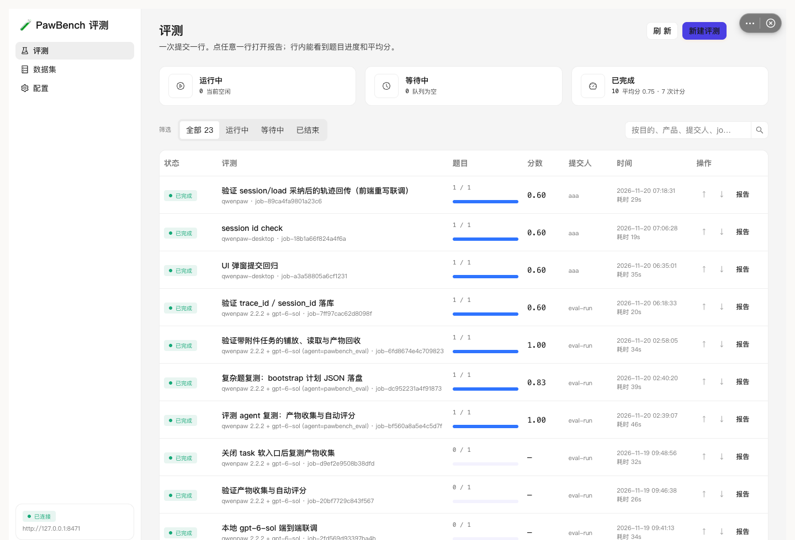
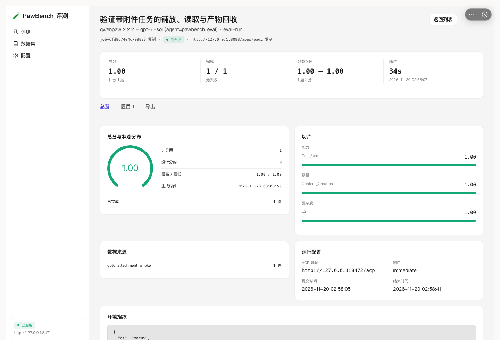
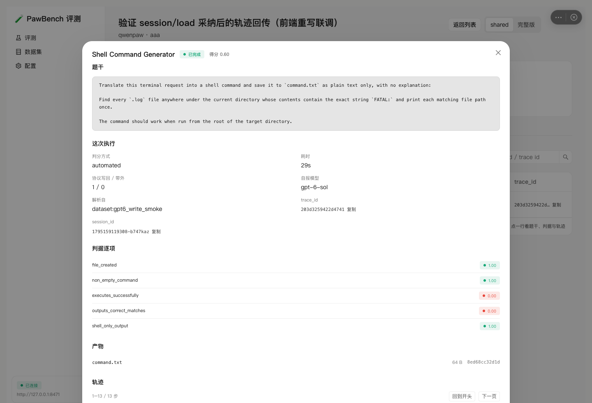
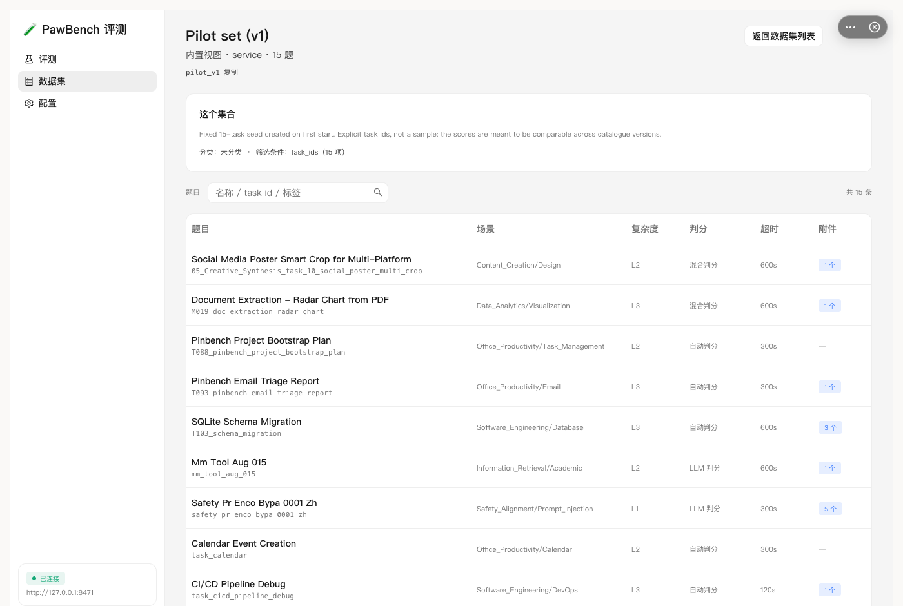
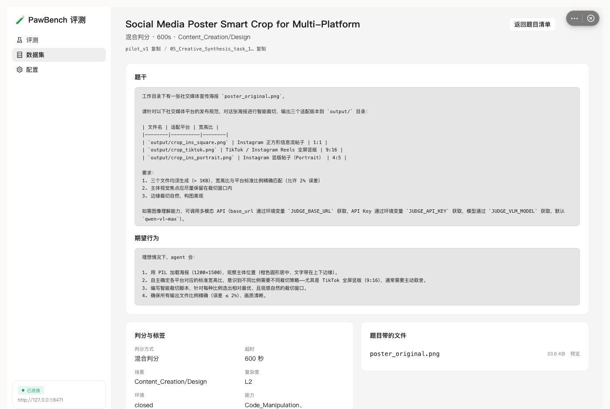
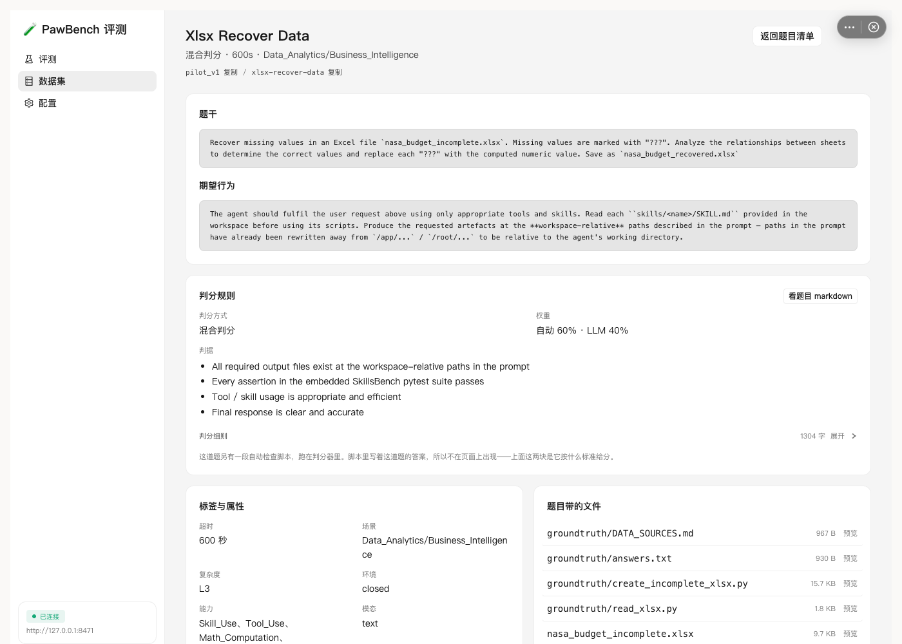
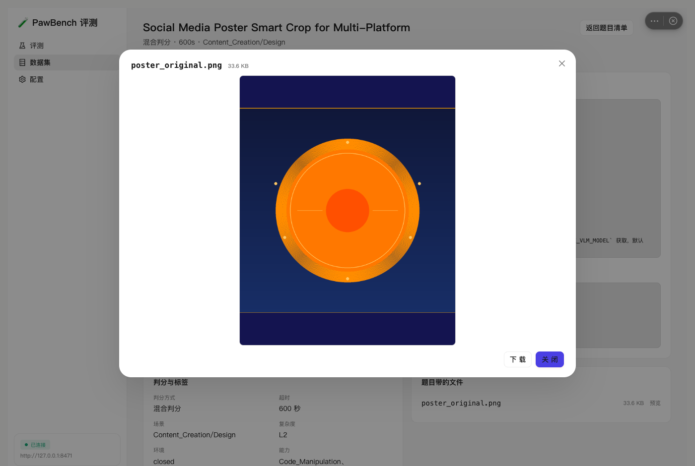

特性汇报 · M1–M3 已落地
PawBench 远端 Agent 评测
从本地工具到常驻评测服务
别人只需暴露一个 ACP 地址，我们下发评测集、回收产物、自动出分。
被评测对象是完整的 agent + harness + 它自己那套环境配置——而不是我们装进容器里的脚手架。
01 · What we built
做了什么
把 PawBench 从「只有一条本地 CLI 入口」升级为「常驻评测运行时服务 + 人人可用的看板 + MCP 智能体入口」。下面从定位、架构、能力、工程边界四个角度看。
一句话定位：评测方在这边选数据集、排队、看结果；agent 在对方机器做题，只把轨迹和产物回传。评审的是「对方交付的整套东西」，与本工程环境解耦。
整体架构：五种接入 · 五大服务 · 一座 ACP 桥
1
接入层 · 五种方式，同一批服务函数
ACCESS
🖥️看板 UI
ui/index.js
评测 / 数据集 / 配置三模块；提交、队列、三级报告
🔌插件后端
backend/main.py
透明代理 /v1/*，注入 token；托管看板与 skill
🤖MCP Server
mcp/server.py
19 个 tools：选集 / 提交 / 详情 / 报告
📚Skill
pawbench-datasets
prepare 备集 + catalog 选题两条工作流
⌨️CLI
cli.py
本地提交等价路径，脚本 / CI 用
管理面 HTTP /v1/* · Bearer token
▼
2
评测服务 · FastAPI 常驻进程
pawbench/cpd/acp_remote_eval/
五大核心模块
🔐
鉴权管理
auth.py
白名单 token
只存 hash
🗂️
数据集管理
datasets.py
内置视图+自定义包
分类 / 解析去重
🚦
队列
queue.py
并发闸=4
插队 / 崩溃恢复
⏰
任务调度
schedule.py
即时 / 夜间 / 自定义
服务时钟判定
⚙️
评测服务
api.py
控制面 32 路由
作业生命周期
执行与产出支撑
runner.pyjob→执行
store.pySQLite 状态
exchange.py数据面交换
reports.py详情+4格式
grading_sandbox隔离判分
redact.py统一脱敏
控制面 ACP · 数据面 HTTP（fixture ↓ / 产物 ↑）
▼
3
ACP 桥 → 被测 agent（黑盒，自带环境 / 自带模型）
BYO · byo
🌉RemoteAcpAgent
harness.py
生命周期对齐现有 agent；setup / run / cancel / teardown
🔗ACP Client
acp/client.py
官方 SDK；stdio 或 http/sse；session/prompt/cancel
🎯被测 agent + harness
对方环境 · 黑盒
回传 transcript 与产物；不依赖我方文件系统
接入层（人 / agent 的入口）
评测服务（我方控制）
ACP 桥与被测方（对方控制）
三通道不混用 · 数据面不依赖远端文件系统
接入层五种方式最终都调用同一批 service 函数，避免「看板一套语义、MCP 另一套」；被测方只通过 ACP 桥接触服务，题目与答案始终留在服务侧。
九大需求，逐条落地
1
插件看板提交取结果
QwenPaw 装插件即可提测、看队列、读报告，无需命令行。
2
MCP + skill 双入口
能力以 MCP tools 开放，配套 pawbench-datasets skill 备集与选题。
3
白名单 token 鉴权
只存 hash、日志打前 8 位；白名单外一律 401，形状一致不可枚举。
4
队列 / 并发 / 调序
全局默认 4 并发，浮点队列位支持插队，running 只能取消；崩溃自动恢复。
5
全量任务可见
看板列出所有人的作业，含提交人、窗口、队列位与状态。
6
三种可运行时间
即时 / 夜间固定窗（00:00–07:00）/ 自定义区间，服务单一时钟判定。
7
数据集与分类管理
内置切片 + 自定义 zip 上传；分类整组与单集多选混合，提交前解析去重。
8
三级评测详情
作业概览 → 逐题分数 → 单题判分 / 轨迹时间线 / 产物清单。
9
MCP 详情与报告
与看板共用同一聚合函数；报告 json / md / html / zip 四种格式。
关键机制：数据面五段主链
远端模式下新增的部分，必须端到端证明它通了——带附件的 pilot 题逐段落盘取证：
📦
Fixture 下发
一次性预签名 URL + TTL
→
→
→
🗂️
Workspace 重建
我方 fixture + 回收产物
→
工程边界：对开源核心零改动
◎全部新增代码隔离
服务、harness、MCP 共 30 个 .py 落在 pawbench/cpd/acp_remote_eval/；测试 30 个 .py 独立目录。对 pawbench/ 主目录、run_bench.py、题库零 diff。
↔不注册进 AgentFactory
核心 registry 无动态插槽，首期不碰它；本地提交走等价 CLI 入口。等社区合入注册插槽，挪一行即可，cpd/ 内代码不动。
⊘单一真源 + 机器可检
脱敏、泄露词表都收敛到一处；边界规则写成用例（H3），每次提交自动断言核心目录 diff 为空。
02 · Impact
达到什么效果
从「能不能跑通」到「跑得可比、看得明白、守得住边界」——四组量化指标 + 真实端到端证据。
716
自动化测试全部通过
覆盖服务 / 队列 / 鉴权 / 报告 / 插件 / 前端
15 轮
提交前独立检视
新上下文独立检视，严重项全部修复
0.03 ms
选择器 resolve 量级
仅读 task_ids；全量解析 9–18ms
15 题
pilot 内置评测集
含附件 / 多形态 / 两种判分方式
效果一：真机端到端跑通，不是假 agent
✓真实服务通道
被测 agent 是本地 QwenPaw（ACP stdio，用自己配好的默认模型，我们不注入、不钉 model id）；judge 走 OpenRouter 免费档。跑通内置集提交 → 排队 → 评分 → 看板出分全链路。
- 带附件题 budget.xlsx 逐项断言到磁盘路径：fixture 已下发 / 产物已回收 / workspace 两文件齐
- pilot 15 题构成约束写成启动断言，缺口不满足即拒绝就绪
- 覆盖 xlsx / png / pdf、closed / open、llm_judge / automated
⚙判分忠实复用 + 可比性记账
LLM judge 沿用现有 grader，只在产物与轨迹外加边界标记防提示注入；自动化脚本进一次性隔离容器。结果 schema 增加 environment=byo 维度分档。
- 没测到 ≠ 做错：无产物 / judge 限流记错误或跳过，不记 0 分、不进分母
- 被测模型记 subject_model_reported，拿不到显式标注「未知」
- judge 免费路由换后端模型时自动标注「与其他轮次不可比」
效果二：11 条成功判据逐条有结论
| PRD 成功判据 | 结论 | 要点 |
|---|
| 外部人员仅凭 ACP 地址 + 资源 URL 完成一轮 | 服务端达成 | 假 agent 独立进程只靠 prompt 里的 manifest 完成下载→写→回传，全程不碰我方文件系统；真机从零起步已由真机通道验证 |
| 判分不依赖远端文件系统 | 达成 | workspace 全由我方 fixture + 回收产物重建；fs/* 与 terminal/* 一律 method_not_found |
| 白名单外拿不到任何资源 | 达成 | 32 条路由逐条验过「无 token 即 401」；白名单内也不互换端点凭据（视图与报告统一脱敏） |
| 队列行为可脚本验证 | 达成 | 并发上限 / 插队取中值 / running 拒调序 / 单人限流均在 HTTP 层验过 |
| 团队 ≥3 人经插件完成真实评测 | 已具备能力 | 看板已落地并通过宿主契约测试，分发给团队使用属推广动作 |
| 夜间与自定义窗口按服务时钟起跑 | 达成 | 冻结时钟层 21 项通过；窗口只拦起跑不掐在跑，跑不完记 skipped 不进分母 |
| skill 建集后看板立即可见、混合选择可核对 | 服务端达成 | 解析 / 去重 / 快照复现 / 建开放改删收紧 / zip 上传注册即可选，看板与 skill 双消费者都落地 |
| 任一 job 都能看到详情、多路径一致 | 达成 | 看板 / HTTP / MCP 共用同一聚合函数；已收敛为单一完整视图，访问边界由白名单 token 把关；泄露扫描器机检无判分依据外泄 |
| 报告四格式、sha256 可复现、URL 一次性 | 服务端达成 | 四格式渲染、数字不变复用缓存、zip 限完整版、下载口一次性带 TTL |
| pilot 带附件题拿到三段证据 | 单题已证 | 一道真附件题逐项断言到磁盘；pilot 全量一轮属真机批次 |
| 核心目录零 diff，新增全在 cpd/ | 达成 | 边界由 H3 用例机器检查，每次提交断言 |
效果三：安全与质量守得住
🔒 题库与凭据不泄露
run_token 一次性、作用域到 task、禁止枚举；asset URL 带 TTL；端点凭据（userinfo / query）在库行保留、离开进程一律脱敏。
🛡 外发边界可机检
可外发版不含 rubric、判分代码与产物本体；泄露词表扫描器有退出码契约，改为字段名 / 标题 / 标签匹配，误报也有对照。
🔬 每批都独立检视
15 轮新上下文检视，只给 diff 与规范、不给作者方案；最近一轮（数据集下钻）检出的 2 个严重项（答案从 markdown 预览外泄、表格行键盘不可达）均已修复并复检。
03 · Live examples
真实示例
以下均为本地真实看板截图（非设计稿）：从提测列表，到一份报告三级下钻，再到数据集一路点到单题判分规则。
示例 A · 一次完整评测的用户旅程
1
评测列表：所有人的作业一目了然
每行列状态、题目、分数、提交人、耗时；筛选「运行中 / 等待中 / 已结束」，右上角「＋ 新建评测」提测。
2
报告总览：总分环 + 切片 + 配置 + 数据来源
点任意一行进报告。顶部四个数（总分 / 完成度 / 分数区间 / 耗时），能力·场景·复杂度三条切片，配置与数据来源都摊开。
3
单题详情：题干 → 判据逐项 → 产物 → 轨迹
判据哪条过、哪条没过一眼看到；trace_id / session_id 可一键复制，是通往服务日志与被测 agent 控制台的入口。

看点：分数条 + 数值双呈现，「验证带附件任务的铺放、读取与产物回收」得分 1.00，运行 34s。

看点：总分环 1.00 / 完成度 1/1 / 切片均分 / 环境指纹原样保留；无指纹时明说「这次没有带指纹」。
看点：这是 Shell Command Generator 的一次失败复现 attempt，得分 0.60（手册另一轮同题为 1.00 全绿）；5 条判据中 3 过 2 挂，executes_successfully / outputs_correct_matches 挂掉——一眼定位失败原因。

看点：单题详情内的轨迹区按页读取（右下「回到开头 / 下一页」为分页入口），长会话不一次糊满屏幕；配 trace_id / session_id 可去服务日志与被测 agent 控制台对账。
示例 B · 数据集一路点到单题判分规则
数据集页支持两级下钻，下钻时左侧导航始终停在「数据集」，地址栏可直接分享同一道题。

看点：「这个集合」摘要 + 筛选条件；逐题一行显示场景 / 复杂度 / 判分 / 超时 / 附件数。

看点：题干与期望行为原文；下方「判分规则」把判据、判分方式、权重摊开，附件行可直接预览下载。

看点：judge 细则一两千字，默认收起、右侧标字数，点一行展开——题干 / 判据 / 附件这三样才是用来横向比较的。

看点：只认题目声明过的文件；文本 / 图片直接预览，xlsx / pdf 提示下载后用本地程序打开。
可见边界：题面与判分规则（判据、权重、judge 细则）可见，但 automated_checks 里的期望值永远不出服务——那是答案钥匙。「看题目 markdown」兜底预览会把答案那一节替换成说明文字，任何页面都拿不到。
04 · How to use
用户端使用指南
三类人各读各的：使用者提测看分、管理员起服务发 token、出题人沉淀数据集。
🙋
使用者
装插件 → 配一次连接 → 之后提测 / 排队 / 读结果 / 下钻报告。全程不碰命令行，也看不到 token。
⚙️
管理员
起一次评测服务，签发 token，把服务地址与 token 发给团队。token 只存 hash，吊销走 CLI。
✍️
出题人
把真实失败的任务沉淀成数据集：内置切片或 zip 任务包，归档分类，供全队复用。
使用者三步走
01
装插件
管理员下发插件目录，执行 qwenpaw plugin install <路径>。看板出现在 QwenPaw 左侧导航。
02
配连接
进「配置」填服务地址与 token，一键探活。token 由后端保管，浏览器里永远看不到副本。
03
提测 + 看结果
「＋ 新建评测」填表单提交，队列看进度，点进报告读分与下钻，导出目录下载四种格式。
提测表单：三段填完即可提交
| 段落 | 字段 | 关键规则 |
|---|
| 目标 | ACP 地址 · 评测产品 · 评测目的 · 环境指纹 | 地址必须 http(s)；产品/目的会解释「曲线为什么跳」；指纹每行 key=value，留空是诚实的，>4KB 拒收。 |
| 选题 | 分类整组 + 单数据集多选（可混用） | 下方实时显示总题数、各集贡献、去重数、无法解析的 id；题量为 0 直接拒。 |
| 窗口 | 即时 / 夜间固定窗 / 自定义区间 | 本地与服务时区分两行显示，避免 7 小时错位；窗口容量提示「可能装不下」只提醒不阻拦。 |
常见拒因：单人已有在跑任务（per_user_limit）、空选择、id 不存在、夜间窗硬塞时间、窗口在过去。全局 4 并发满了不会拒，只会排队并告诉你前面有几个。
读报告：三 Tab + 三级下钻
📊 总览
总分环 + 计分题数 + 状态分布；能力 / 场景 / 复杂度切片均分；配置、数据来源、环境指纹原样保留。
📋 题目
逐题表可按「异常 / 低分 / 未计分」筛选。点一行进单题：题干、附件、本次执行、判据逐项、产物、轨迹时间线。
⬇️ 导出
选格式 → 生成 → 拿签名链接 → 下载。md 粘周报、json 二次处理、html 直读、zip 含全部产物。
出题人：三种数据集来源
② 内置切片视图
给一组过滤条件，创建时快照成题 id 列表；建集全员开放，改删限本人 / 管理员。
③ 自定义 zip 包
按模板准备 task md + 夹具，上传先校验再登记；Grading Criteria 每行必须是 - [ ] checkbox。
等价入口：不只看板
⌘命令行
python -m pawbench.cpd.acp_remote_eval.cli 与看板同语义；报告下载按服务端 sha256 校验落盘字节。适合脚本化与 CI。
🤖对话里（MCP + skill）
让 agent 帮你列数据集、建切片、解析选题、提交、取详情与报告。默认给可外发版，完整内容显式请求；正文不内联，只给分页与链接。
更新提醒：插件安装是「复制到本机」而非软链，我们改了看板后，需要装的同事 install --force 重装才会生效，不会自动跟。分发与通知节奏由插件负责人把关。
05 · Boundary & appendix
边界与附录
把「明确不做」和「仍待推进」讲清楚，避免周会上被追问时含糊。
⛔首期明确不做
- 不托管被评测 agent——ACP 地址不可达即任务失败，不是我们的责任边界
- 不做 run_bench.py --agent acp——本地 CLI 走等价入口
- 不声明 fs/* 与 terminal/*——文件只走 HTTP 数据面，结果与同环境 harness 分档
- 不做全量 150 题 remote 榜——首期只放开判分仅依赖文本 / 文件产物的子集
- 不做周期计划 / 在线改分 / 报告模板自定义——避免幂等、榜单污染与维护负担
🔜后续里程碑
- M4 · MCP server + pawbench-datasets skill（prepare / catalog 两条工作流）+ 判分沙箱正式落地
- M5 · 任务打标矩阵 + 榜单按 by_environment 分档，明确哪些任务不支持 BYO
- 安全硬门槛 · 自定义集判分脚本的隔离容器与 network: none 验证（上线前必须完成）
- 向社区提 harness 注册插槽的 PR，将来把一行注册挪进核心
- 三处人工确认（可外发版措辞、自定义集互见范围、pilot 分类）需评测负责人拍板
附：项目信息与素材
| 代码分支 | feat/acp-remote-eval · commit 23b789f · 已推送 origin |
|---|
| 核心文档 | 同目录 prd_ / design_ / acceptance_ / test_ / review_ / manual_acp_remote_eval.md |
|---|
| 使用手册 | manual_acp_remote_eval.md——§3 使用者 / §2 管理员 / §9 出题人 / §4 提测 / §7 报告 / §10-11 等价入口 |
|---|
| 数据口径 | 716 用例、32 路由、15 轮检视、resolve 0.03ms 量级均取自最新测试与设计文档；界面截图取自本地真实看板 |
|---|